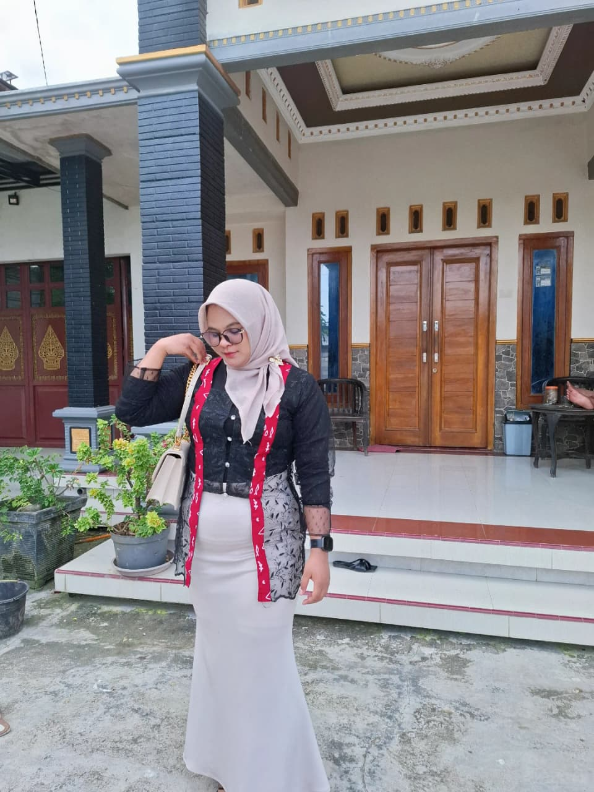

Web Developer & Network Enthusiast
Mahasiswa D3 Teknologi Informasi yang membangun aplikasi web, memahami jaringan dari pengalaman di perusahaan penyedia internet, dan suka menjelajahi tempat baru.
Hubungi Saya Lihat Proyek
Saya mahasiswa D3 Teknologi Informasi di Politeknik Negeri Madiun. Saya tertarik pada pengembangan web, jaringan komputer, dan cloud computing.
Pada Januari–Juni 2026 saya magang enam bulan di PT Sarana Media Cemerlang (JAGONET), penyedia layanan internet di Magetan. Saya bekerja di tiga divisi: Customer Service, Admin, dan NOC (Network Operation Center). Dari sana saya membangun sistem billing berbasis web untuk membantu pekerjaan harian tim.
Di luar kuliah, hobi saya traveling: menjelajahi tempat baru dan menemukan hal-hal yang berbeda dari rutinitas sehari-hari.